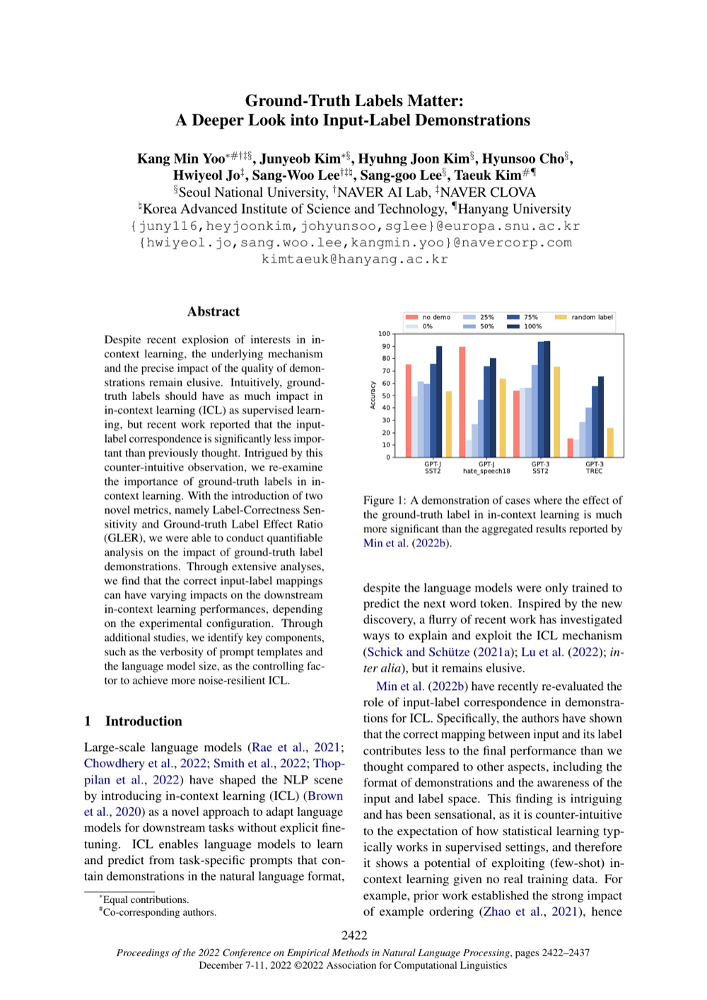

한줄 요약
입력-레이블 시연에서 정답 레이블이 왜 중요한지에 대한 심층 분석

Figure 1. 정답 레이블이 인컨텍스트 학습에 미치는 영향을 보여줍니다. 올바른 입력-레이블 매핑이 ICL 시연에서 어떤 역할을 하는지 심층 분석합니다.
핵심 내용
- In-context learning에서 시연 예제의 정답 레이블이 모델 성능에 미치는 영향을 심층 분석
- 올바른 입력-레이블 매핑이 제공될 때 모델이 더 효과적으로 학습하는 조건과 메커니즘 규명
NLP Fundamentals